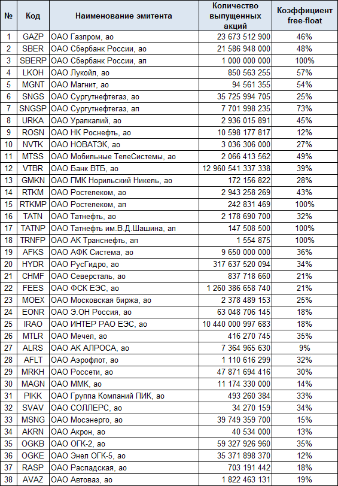

Free Float это коэффициент, показывающий какая доля от всех ценных бумаг компании крутится в свободном обращении на фондовом рынке среди частных инвесторов. Чем выше значение Free Float, тем лучше это отражается на ликвидности, а акция менее подвержена ценовым спекуляциям.
Высокая доля «свободно плавающих» акций свидетельствует о том, что индивидуальным инвесторам доступно достаточное количество ц/б для осуществления сделок купли-продажи, при этом риск спекуляций с ценой практически исключается.
Free Float обычно указывается в процентах от суммарного количества акций данного типа (по обыкновенным и привилегированным бумагам расчет ведется отдельно). Если же FreeFloat низок, это создает опасность резкого, спекулятивного изменения цены в ту или иную сторону, а значит, повышает риски для частных инвесторов.
Например, в случае появления большого количества продавцов из-за недостатка индивидуальных держателей акций возникает ситуация внезапного снижения их стоимости. Спекулянтам так же невыгодна торговля акциями с низким Free-Float, т.к. из-за нехватки предложения образуется широкий спрэд, который приводит к убыткам.
Зависимость между ликвидностью и величиной данного показателя не является прямой. Так, один из самых высоких FreeFloat на российском фондовом рынке демонстрирует компания ЛУКОЙЛ, в свободном обращении которой находится 57% всех обыкновенных акций. Однако акции нефтяного гиганта не являются самыми оборачиваемыми на рынке, большую ликвидность показывают бумаги ГАЗПРОМА, коэффициент FreeFloat которого равен только 46%.
Текущие коэффициенты данного типа публикуются на сайте Московской Биржи. Дело в том, что показатель FreeFloat используется биржей при определении веса акции, входящей в состав того или иного индекса, поэтому данная информация всегда доступна и актуальна.
Рассматриваемый инструмент может становиться как больше, так и меньше. Это происходит вследствие некоторых корпоративных действий эмитента, таких как стратегическая скупка бумаг на открытом рынке, погашение казначейских облигаций, либо обратный выкуп акций. В результате обратного выкупа изъятые из обращения акции могут аннулироваться, что в итоге приводит к увеличению стоимости оставшихся в обращении акций. Когда изъятые бумаги упраздняются, коэффициент Free-Float падает.
Следует помнить, что показатель Free Float отражает лишь долю «свободных» ценных бумаг, рассредоточенных среди частных миноритарных инвесторов, при этом в данное число не включаются инвесторы, владеющие единолично больше 5% уставного капитала (руководство компании, топ-менеджеры, государство, крупные акционеры), а также инсайдеры.